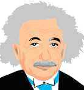

|
|
Clearbird's
Manifesto |
|
|
Reasons for Standard Clearing Technology
Technology and the Axioms
About copyright issues
Clearbird's liberal copyright
To translators
KSW's 'Having the tech'.
Jonathan Seagull
KSW and teaching the tech
The roots of the subject
From technology to dogmatism
Prometheus
Uses of the manual
The Flying Academy
Disclaimer
Note: The Manifesto refers mainly to our main publication, 'The Road to Clear'.
The manual , "The Road to Clear", should add up to a textbook in modern basic auditing and standard technology. The complete auditing procedures, defined by R. Hubbard, are strictly adhered to. He referred to them as standard technology.
 |
|
It is however an edited and rewritten version of how to do this standard technology. We had to consult a number of authors and experts to arrive at the best formulation and the correct communication of the subject.
The basic technology is the same; the communication of it is in its own language and form. This technology in this almost copyright-free version is called 'Standard Clearing Technology' or 'ST' for short. The full title of the manual is Clearbird's: "The Road to Clear. User Manual in Standard Clearing Technology, Level 0-5". The manual can be compared to books you can buy on popular computer programs. In any book store you will find a variety of books on 'Windows', 'Corel Draw', 'Adobe Illustrator' and 'Lotus' and just about any other major software program. These alternative manuals are often better than the software houses' own provided manuals. If for no other reason because they have to fight an uphill battle and compete for popularity and readers. They do that by making it easy to read and understand and by bringing many illustrations. They don't see it as their mission to rewrite the computer programs themselves, of course. In a similar fashion "The Road to Clear" is a user's manual in R. Hubbard's standard technology.The Road to Clear was written for the following reasons:
1) We wanted to simplify the study of basic auditing.
Usually a student, who wants to learn to use standard technology, will study a collection of R. Hubbard's research papers known as HCOB's. The HCOB's will often refer to several levels of skill in the same issue.
(HCOB: Hubbard™Communications Office Bulletin. Technical essays or bulletins written by R. Hubbard).Also, these HCOB's will often refer to things that have later been modified or updated and sometimes cancelled or simply not part of modern standard technology.
Some HCOB's, written a long time apart, may have conflicting data, which it takes a lot of skill to navigate through. "Is it this way or that way?" will the new student ask.
In Standard Clearing Technology we have had the benefit of hindsight. The technology was largely developed before 1978 and nothing written after 1982 (which includes Filbert's book, Excalibur) was vital. Experts in this field have long since sorted out how to actually do things in session. This has however never been made available in a straight forward manner before. Filbert mainly gave what to audit (processes) but not much about how to do it.
We have at length included the data relevant to practical application. We have concentrated upon application of the subject by new students. In some instances we have of course included philosophical data and references to higher levels of auditing. The student do need a little bit of perspective. In those instances we have made sure the student is given enough of an explanation to understand it in the context. Each level also has the data on what to audit (the processes), but R. Hubbard and Filbert would still be the principal sources for more techniques and processes.
 |
Albert Einstein: |
2) In R. Hubbard's work we found, that the bulk of his technical writings makes little reference to the Axioms. This is peculiar as they are very applicable throughout. They are usually included in official standard technology courses as something deep, but impossible to understand - like Einstein's theories in physics. We have tried to remedy this disconnect by making references to them throughout The Road to Clear and enable the student to think with them. Here we are following L. Kin's example. He used the Axioms to explain theory throughout his four books on the subject.
3) We wanted one comprehensive manual that in one place and volume contained all the data relevant to basic auditing.
Basic auditing is a skill level that any auditor will have to master first. The skills of basic auditing are TRs, metering, Auditors Code, Basic definitions and Axioms, Obnosis and scales, model session, rudiments, rehab, folder administration and the absence of Gross Auditing Errors (GAE's) in general. All this, adding up to basic auditing, are skills any auditor at any level will have to master and perfect throughout his career. To have all the relevant data in one place is therefore of great practical use.
We are still encouraging students to study R. Hubbard's original writings and HCOB's, Filbert's book, L. Kin's books and the other authors mentioned. There are a lot of nuances and details it wouldn't be practical to include in a basic manual. As the student gets more familiar with the technology and the practical application of it, he will naturally develop an interest and an aptitude for more data, more details and more in depth information about the technology and its background. Mr. Hubbard, for one, has written and given recorded lectures extensively on all the subjects of this manual and still, now over 20 years after he stopped writing, his books contain the most detailed information.
4) We wanted to communicate basic auditing and the procedures of the Grades more in the form of an easy to understand basic textbook. Therefore we found it appropriate to apply the principles of R. Hubbard's study technology to the writing and editing phase of The Road to Clear. Having the advantage of hindsight we could prepare the text so it doesn't contain more big words, special expressions, American sayings and slang, etc. than the subject needs. It may loose some in literary style and philosophical depth. But hopefully it should gain clarity to a wider audience not tuned in to this. Any study takes the learning of new terms and ideas. But in communicating them, we found it important not to use a too specialized or too big a vocabulary.
We have used pictures throughout The Road to Clear to make it easier to understand. Don't be misled to believe it is not a serious study. It is. But to most students it is also fun and the pictures should help to an easier understanding of some of the concepts and ideas.
This is also more in tune with modern communication media. With electronic media pictures are easy to include. The work is not to reproduce the pictures, but to find or have produced good and helpful illustrations. We have simply used adapted and modified clip art. R. Hubbard spoke extensively, in his lectures on study, to the usefulness of having pictures in study materials. Back in his main productive period (1950 - 80), reproducing pictures in books was an elaborate and expensive process. You needed to find and hire an artist tuned into this work and pay him for each drawing. When he was done, after endless discussions most likely, you would have to repeat the process with the printer. We think the reader will appreciate that it is finally being done.
The principal writer of standard technology, R. Hubbard, also spoke to the need of the technology being written up in textbook form. Apparently around as early as 1965 he tried to put a team together to do just that. According to Geoffrey Filbert, Mr. Filbert was approached to become part of such a team. The idea was never realized. Filbert ended up writing his own book on the subject in 1982. We believe the main reason R. Hubbard never wrote such a book was that the technology kept developing. When it was finally complete to a point where only minor refinements could be expected, Mr. Hubbard apparently saw less need for it to be summarized and communicated in textbook form. Frankly, he had been working around the clock non stop for over 30 years on developing this technology. He had all kinds of personal and organizational situations to deal with that seemed of pressing importance. He was mainly focused upon writing the source code (to use a programmer term). We believe he simply never got around to write the user's manual on it. So other authors, such as L. Kin, Geoffrey Filbert, Alan Walter, Dr. Gerbode/David Mayo and several others wrote the books on it.
The quick fix, that R. Hubbard was seeking to enforce, was to state that the form he had written and recorded it in (mainly the HCOB's and the taped lectures - what we call the source code) was the only allowed or valid form or record. He actively had people working on keeping other authors out of the picture.
We don't really disagree with, that R. Hubbard's record is the one for the ages. Scholars will mainly go to this extensive body of work to learn more and get their answers to difficult questions.
Our goal is less ambitious than R. Hubbard's or the other above authors. We have only included data relevant to the practical application and auditing. That has been the guiding principle. The Road to Clear is a practical handbook with a set of practical skills in mind as the end product.
5) We also wanted to use a simpler vocabulary to make it easier for non English students to read and understand.
6) The Road to Clear has a very liberal copyright. To keep it legal, we have had to avoid some trade marks and only use quotes to the extent it is clearly allowed according to US copyright law.
It has been a funny experience for a lifelong student of the subject to do that. But we don't think it has damaged the communication nor the exact instructions for how to use the technology.
It can also be refreshing to see the 'same old truths' restated by different writers. It helps to make it independent of the words used. Mr. R. Hubbard expressed it this way: "It's time to realize there is brew in the pot." He advocated for years to be able to "audit by definition", meaning the auditor's basic understanding of the subject and the 'instinct' he developed for what to do was more important than rote procedures. As the subject advanced, rote procedures did become possible and more and more common. We have brought the rote procedures but hopefully also enough data to enable students to audit by definition.
We do recommend the rote procedures for new and even advanced students. Leave it to technology finders and researchers to find new processes, put them through a long and strenuous testing procedure and to prove to you that what they have come up with is faster, better or father reaching than what you have.
Since the skills of basic auditing in our view are far more important than any technique it is possible to invent, any time spent on the basics presented in The Road to Clear is well spent - even if your goal should be to develop new and exciting technology, that will revolutionize the field. The first things you will have to learn to perfection are still the Axioms and Basic Auditing skills.
© ® ™
"The Road to Clear" and Copyright
In communicating the standard technology we have of course looked at possible copyright infringements we may have committed on the works of the late Mr. L. Ron Hubbard™ and others. Our main concern has been R. Hubbard's HCOB's. The copyright owners of the HCOB's is a corporation, called CST with a P.O. Box address in California. It is run by lawyers. They seem to want to exercise a monopoly even of materials R. Hubbard collected from other sources. Since The Road to Clear is a completely new textbook the copyright is clearly ours. It is mainly a user's manual to the technical data in the HCOB's - the research papers. But "The Road to Clear" is a user's manual, not the programming source code.
The issues that remain on copyright are the Axioms of Scn and the actual processes and procedures and occasional brief fair use quotes. Here we have with permission used Filbert extensively. But we are also in the mainstream of the tradition of textbook writing and are fully protected by US copyright law in this endeavor. (You see, the law in its wisdom is also designed to protect the users of already published data as to allow for further study, research and future applications and publications). There is nothing unusual in our undertaking. US copyright law, for one, is very clear on these points:
Title 17, Chapter 1, Sec. 102, (b) (Copyright in General) of US copyright law states:
In no case does copyright protection for an original work of authorship extend to any idea, procedure, process, system, method of operation, concept, principle, or discovery, regardless of the form in which it is described, explained, illustrated, or embodied in such work.
So this clearly states, that processes and procedures can not be copyrighted. (This apparently is to protect society and the culture itself against knowledge monopolies). Thus we can safely and legally bring the original version of processes and various correction lists, etc. The Axioms (which are also posted on the Internet by CST), are stated as basic principles and discoveries and we have thus legally kept them unchanged. We have quoted them from Filbert for commenting and teaching purposes. As far as we can trace it, they went into public domain in 1977. Jeff Filbert, republished them in 1982 and it could be argued by him that he is the legally correct copyright owner at this point. This aside, we just depend on the rights under the law of any textbook writer.
We have used Fair Use quotes throughout the manual. We have mainly kept 'Fair use' to definitions of technical terms and short quotes we found appropriate and out of respect for Mr. R. Hubbard, Filbert, L. Kin, Pilot and others' work.
Fair Use is covered in the US copyright law this way:
Fair Use: Title 17, Chapter 1, Sec. 107 (Limitations on exclusive rights: Fair use) the US law says:
1) the fair use of a copyrighted work, including such use by reproduction in copies or phono-records or by any other means specified by that section, for purposes such as criticism, comment, news reporting, teaching (including multiple copies for classroom use), scholarship, or research, is not an infringement of copyright.
2) the purpose and character of the use, including whether such use is of a commercial nature or is for nonprofit educational purposes;
3) the nature of the copyrighted work;
4) the amount and substantiality of the portion used in relation to the copyrighted work as a whole.Our use is for non-profit educational purposes and are intended to generate interest in the technology as well as these authors original works. (Again the law seems to protect the culture against knowledge monopoly).
Re (3) above and the HCOB's, Mr. R. Hubbard stated repeatedly, that his non-fiction work and philosophical writings were a gift to Mankind and free and should be kept that way. The membership organization that legally owned the copyrights of the HCOB's under Mr. R. Hubbard (HASI of Phoenix, Arizona) had the stated purpose to mainly protect their ethical use. It was set up to be dissolved at some point and the work go into public domain. The dissolvement actually took place May 10, 1977. This the author knows from documents and firsthand. He was a member in 1977, and was suddenly told, "Sorry, HASI does not exist any more."
But as things are, we have preferred not to challenge the legality of CST's claim of being the copyright owner of the HCOB's (the source code as we prefer to call it). We have avoided a long list of trademarks and words registered as trademarks clearly owned by CST, including the usual name Mr. R. Hubbard (L. Ron Hubbard™, Hubbard™) is called. It is a shame to see all these terms being actively banned from print and broader use. (We agree, that 'Mind' is a four letter word, but we have no second thoughts about using that in the text). But as Mr. R. Hubbard mentions in his book, 'Dianetics™ 55!'. Whatever form you put the truth in, the truth itself won't change. You can bulldoze and smash the medium it is written on and so on, but the truth itself will prevail. We would have loved to give more credit to the remarkable man Mr. R. Hubbard was and to his works, but that will have to wait to a later time. For now we will let the truth of his technology prevail in this work, published and owned by Clearbird Publishing.
Our own guidelines for using Clearbird's "The Road to Clear. User Manual in Standard Clearing Technology, Level 0-5", are: It can freely be distributed in electronic, non-commercial versions; be it as duplicate websites, downloadable files, etc., including use of pictures and text in its original form, in excerpt or in translations. We do not allow printed commercial versions or downloads or CD's, etc. for money without special permission from Clearbird. For this purpose we can be contacted at http://freezoneamerica.org, who is the original poster of the materials to the web, but not otherwise affiliated with Clearbird Publishing.

If it is of interest to you to see The Road to Clear translated into your language, feel free to do so. It is especially prepared for this purpose. All non English translated electronic versions are completely copyright free. You do however have to ensure, that the final product is true to the subject itself. You need an advanced student of Standard Clearing Technology or Scn to check it carefully for technical correctness.
In case of questions the translator team will have to refer Mr. Hubbard's original HCOB's, books and lectures. Let your experts decide from this volume and the HCOB's what is the best and most correct formulation of the technical facts.
In translating always keep in mind what action you are describing and trying to get the student to perform. It is much like what R. Hubbard described as 'Planning by Product'. You take the end product as your guiding principle and stable datum in getting things formulated right. If you have a clear concept of the actions and practical application involved, you can't go wrong. A word by word translation via a dictionary, can lead to absurdities as automatic translation computer programs will convince you about.

Keeping Scn Working and this Manual
Students of R. Hubbard's work will be very familiar with the issue 'Keeping Scn Working No. 1'.
It says as its first point of 10: Having the Technology.
The number four point of KSW is: Teaching correctly the correct technology
First, what does 'have' mean in 'Having the technology'? R. Hubbard has extensively defined and worked with the basic concept of 'Have'.
Having, according to R. Hubbard, means "to be able to touch, permeate or direct the disposition of". Havingness also means, "ARC with the environment"; or in this case, with the subject of the technology. Havingness also means 'Duplication'.
So it has a lot to do with being able to reach and duplicate. You could say having a skill "under one's belt" would be a slang expression for that. 'Easily accessible' would also fit in.
We find, that the more people are able and willing to create a duplicate of this technology (by studying it and learn to apply it), the more we will 'have' this technology in society as a whole.
A 'perfect duplicate' when we talk about learning and teaching, transcends words. What a keen student should arrive at is not verbatim memorizing but: ideas, concepts and intuitative actions. A real pro has long since 'forgotten' to memorize rules and quotes before he acts. He has developed an 'instinct', an intuition and a knowingness about how to succeed in his field and overcome any difficulties he meets in practicing his craft.
In line with this we want to say this to Hardliners insisting upon KSW #1 is being violated with The Road to Clear:
There is another kind of 'Having' when it comes to professional skills and learning. Many professions, such as medicine, law, psychology, psychiatry and a number of sciences, consider 'Have' as to be able to keep for themselves. This is of course closer to the traditional idea of 'Have': "It's mine. I own it, so you can't have it!" "Let's keep it scarce and make sure to keep it for ourselves." This is the traditional monopolistic and 'scarcity' view upon property and knowledge too. Many professions and groups have tried to create a monopoly on their body of work. The Catholic Church had a monopoly on the Bible - until Martin Luther translated it (1521-31) and Gutenberg printers printed it. This was 'putting it on the web' of that age: Plain language and made widely available. He was probably accused of altering the Bible. And he sure did - from Latin (not Hebrew or Greek) into German and from obscurity into a meaningful book that changed Europe.
The law profession is a current example of a knowledge monopoly. Lawyers have people pay high fees to get help from them with the incomprehensible language, the unsuspected exceptions to the rules, the commentaries elsewhere that change everything, the rulings of the past that are poorly published, etc., etc., that makes the law only accessible to the few; and these few make sure it stays that way.

Jonathan Livingston Seagull
As the nature of standard technology is, that all beings can benefit tremendously from having it (meaning duplicating it, be able to permeate it and have it as a skill under their belt), it is important, that we stick to R. Hubbard's liberal definition of 'having' and overcome any attempts to monopolize it and selfishly control it. It is important, that we don't get stuck in, that truth can only be learned by learning a subject verbatim. That somehow the words contain the magic. The real magic of any learning is never in the words. It's the ideas behind them and the communication from one being to another of the basic truths, that is the magic. That is what Clearbird Publishing and The Road to Clear is about and we have used the image of a Seagull to symbolize that. This is based on the story about Jonathan Livingston Seagull by Richard Bach. It is a symbolic story about passing skills and wisdom on to new seagulls. The experienced seagulls teach them the joy of expert flying.Teaching Correctly
Regarding: number four of KSW 1 is: Teaching correctly the correct technology.To us it has always seemed that the principles of the extensive study technology R. Hubbard defined and developed was very suited for textbook writing. It should be in the materials themselves. Not just with the instructors and on checksheets. Also, the Axioms and other basics should be used in the explanations as to point out the consistency of the technology. Especially L. Kin has shown how this can be done successfully. We are trying to follow his example. Research papers are research papers and textbooks are textbooks. Textbooks are written for a specific audience of non-experts. They are written on the assumption that the subject is new to the student. Research papers are different. Research papers are what we refer to as source code (programming term for the technical instructions given to the computer). You want to pack such publications with new and marvelous discoveries and impress those who already have a solid foundation in the subject. R. Hubbard mainly taught his students face to face up to 1966. All his technical writings were done as part of teaching his own advanced students coming from near and far. There was a close dialog going on. It was a close knit group with its own slang and "slanguage". After 1966 it was more aimed at a reading audience in different locations. The writings became easier to understand as a result. But the principal readers were still the same people - his now former personal students. R. Hubbard often did a marvelous job in addressing several different audiences at the same time. But truth told, the two basic groups (new students and seasoned experts) are too different to make it possible for them to share the same materials. Thus a communication of the subject to new students only, has never seriously been done. Filbert wrote for students who already had some foundations in the subject. L. Kin did not include the standard technology procedures.
In a way the KSW #1, as it is being practiced, has become the worst enemy of the subject. 'Having the Technology' has become a monopolistic statement. The ultimate justification for telling others they 'can't have it', except by surrendering to the "We have it' people's" conditions and arbitraries. You have to 'Join the Sea Org' (or enroll under their strict rules) to get access to much of R. Hubbard's writings.
The audience the original materials are mainly written for are seasoned scholars.
The way the subject is taught today is comparable to the description of law above. Even new students are put through all the small mistakes and and detours and sometimes difficult language of the research. They have to learn the mistakes and then 'unlearn' them. They have to memorize the original papers, revisions; and revisions of revisions and somehow figure out what you actually do in session.
The development of the subject is of course what advanced scholars want to know in order to get a deeper and unique understanding of the subject. They will also at some point reach the comfort level of a 'Doctor of Law'. They can catch any less educated student in not knowing what "R. Hubbard stated in a lecture in 1962".

The Roots of the Subject
With The Road to Clear we are seeking the roots of the subject. Meaning: the original driving force and enthusiasm that nourished it and brought it about as a subject. For a subject to stay on top in a 'Power condition' the first rule is: Don't disconnect from what got you there. What propelled the subject into a condition of Power early on was clearly stated in R. Hubbard's first book on the subject. "Dianetics™, The Modern Science of Mental Health".R. Hubbard dedicated on purpose his first book to Will Durant. Will Durant was a history professor, that wrote a number of popular books on philosophers and the History of Philosophy. This was an outrage to the philosophical society. "How dare Dr. Durant make the subject of Emanuel Kant, Schopenhauer, Nietche, Spencer, Spinoza, Descartes, Kirkegaard and many others available to the broad public!" This caused an outrage among the 'We are the only one's to know' kind of colleagues of Professor Durant, PHD.
R. Hubbard counted upon the common man to be able to apply the technology in his first book. This created an outburst of enthusiasm and activity. Groups sprung up in unsuspected places and made a run of it. It created an outcry of protest from the professional ranks of psychology and psychiatry. "How dare he say that it doesn't take years of university education to understand the mind!"
The subject soon became divisive and controversial. It had its fervent supporters among its practitioners and students.
It had equally strongly motivated enemies in the professional fields of psychology, psychiatry and academia.
The technology of the first book was workable, but of course not complete. R. Hubbard used the next 30 years of his life to complete that. The technology had early on a very sound foundation. The Axioms of Dianetics™ were stated in 1951. The Axioms of Scn were stated in 1954. They are still valid - a stellar achievement!
But it took the next 30 years of a very productive genius to sort out all the practical problems involved in solving case problems of real people. Around 1978 or 1980 all the basic auditing and lower levels were complete. He had visions of high levels of Operating Thetan, he was working on. He completed a number of these levels in a teachable form. Since they are outside the scope of Standard Clearing Technology, you will have to read about them elsewhere.
As far as the technology up to Clear was concerned it was complete. In 1981 the Basic Auditing and all the levels up to Clear could have been written up in textbook form. Filbert's book from 1982 contains it all. R. Hubbard was a busy man and just didn't get around to write his own book on it.
Instead he said, nothing in his work should be changed. It should be kept exactly as stated in the research papers and original recordings. After all he was basically a writer and took rightfully pride in his research as a literary production as such.
The Road to Clear is however trying to fill a gap between R. Hubbard's research papers and Filbert's also too advanced rendition of standard technology. We are trying to serve the two principal masters. The one is the technology itself. The other is the intended public.
With The Road to Clear we are trying to span the gap in a rational manner. We keep the technology pure, but in its final form and communicated in such a way as to be able to reach a larger audience than first envisioned. Our ambition has been to write the final form of the technology up as simple as possible. Our efforts have been to include all the relevant data for actually doing the activity of auditing. It may lack philosophical depth and literary finesse, but that is actually on purpose. What is new in this technology is not the philosophy. Not even the technology is entirely new. You can see Socrates and Plato use the same principles with their students (Socrates formulated Heuristic teaching. He only asked questions; his students had to find their own answers). The new thing in ST is really this: It is something you do!
We have spared the students for all the changes and revisions that were part of the historical development of the technology. We spare him for the arguments of what R. Hubbard said in 1962 overrides what he said in 1968 but was re-revised in 1978. There are many technical and philosophical points experts can discuss as the sophists discussed the Bible in the Middle Ages. To cover that with new students is not the right way to go about teaching a new subject.
There aren't that many contradictions in the technology. Mainly refinements. All of the technology is firmly based on the Axioms of 1951 and 1954.


From Technology to Dogmatism
The real controversy, in our opinion, in R. Hubbard's own career as a developer and writer was to go from technology to dogmatism.From appealing to the common man to realize his natural potential by taking matters in his own hands, defy authorities, confront his problems and just go ahead and use the technology, his writings turned into just about the opposite. Apparently he got caught up in his own creation, The Church of Scientology™. As its spiritual leader he had to fit the role of a religious prophet that could do no wrong.
Today the official organizations insist upon, that nothing can be questioned. New research (such as being done by Pilot, Walter, Gerbode, Hilton and others) is being banned, even of the upper incomplete levels of 'Operating Thetan'. You will find almost ritualistic procedures being followed in reverence. Hardly the way to increased self-determinism envisioned by R. Hubbard and his students in the 1950s. Even writing the existing technology into textbook form, as The Road to Clear, is considered an act that calls 'Eternal condemnation' upon the sinner. We will happily join up with and be compared to men like Martin Luther or Galileo Galilei. Galileo defied Rome by defending Copernicus' views, that the Sun was the center of the Universe. We do not know if this simple textbook will qualify us, but one can always hope. The concept and need of a comprehensive textbook, a user's manual, in standard technology, and using the study technology to do that, and written for new students, seem as self-evident as Galileo's views of the sun. The situation with the official organizations is however more awkward than Galileo's was. It's Copernicus, who wants to ban Galileo - not Rome. But such a textbook is overdue and needed to be written and connecting the technology with its own basics, the Axioms.
Prometheus
The official organization's authoritative attitude of resisting change was actually firmly put in place by R. Hubbard himself from around 1965 and to his death in 1986. To us it seems he somehow betrayed something important to his own work and certainly in contradiction to his writings from the fifties. Maybe he started out as Prometheus in Greek Mythology, who stole the fire from the Gods and gave it to Man. In this Mythological story, Zeus managed to effectively discipline Prometheus by putting him in iron and chaining him to a mountain. Zeus had birds eat Prometheus' liver every day and had it grow back out every night. R. Hubbard was under attack for much of his life - in a similar manner we could assume. Obviously a painful position, considering the basic intent and potential of the technology.
So maybe the rest of the story is, Prometheus decided that the compensation for him would be to be worshipped as the 'Bringer of Fire'. To become Zeus-like himself. If he turned the bringing of fire into a business or maybe a religion he would be able to cope with Zeus' wrath, feel safe and compensated.Some Hardliners of KSW #1 would say that changing any of R. Hubbard's issues on the technology is 'Altering the technology'. To them I can only say: Standard Clearing Tech is a technology. Technology is something you do. It is an application. As such it is not dependent on who invented it, who inspired it or assisted the inventor -- or how it was originally recorded and communicated. If it was "stolen from the Gods" - who cares?
Technology and literature are also two different things. At any university of size they would reside in different buildings, have separate administrations and have little in common. The two groups would even have a hard time clearly understanding each other. You would see hardnosed, practical people in 'technology' and more out of touch, hard to follow and 'flying around like butterflies' type of people in 'literature'. Technology is only dependent on the right application. "Right" meaning: the application that has proven beneficial and workable to as many cases as possible. That is different from "Political correct", "Condoned by Authorities", "Following the agreed upon ritual", "According to scripture", or even "Powerful literature", or the like.
If you take a technology like electricity, you won't find many that are able to quote Oersted's, Maxwell's, Telsa's or Edison's works on the subject. These men have found a place in history anyway due to their stellar achievements. They didn't need laws or police actions to become immortal or for the technology of electricity to prevail 'unaltered'. People recognized them for what they were, based on their work. The technology of electricity does not seem to depend upon the literary works or the literary abilities of its fathers. No technology will truly stay alive unless it is useful, it is actually used and widely accepted. No great man, be it an inventor, a philosopher, a writer, an innovator or political leader, will ever gain an enduring reputation or respect unless he earns it in the eyes of the population. Sometimes you have dictators trying to overturn that law out of selfish motives, but they don't get famous, they get infamous.
So to KSW Hardliners I'll add this: You may insist upon not changing a syllable of R. Hubbard's work in order to honor the man. I can sympathize with that. His work is still there and should stay unaltered and be studied in its original form. But there are also vested interests and monopoly reasons for not wanting to change a syllable or even allow a restatement in contemporary language. They are fervently pushing the idea that somehow a literary work (the research papers) and a technology is the same thing. You have R. Hubbard himself stating 'don't change a syllable'. I can understand the last one this way: He was pursuing a vision. He needed freedom to do that without having 'helpers' interrupting him all the time with stupid suggestions or changing things behind his back. It was a very lonely job and despite his many admirers, R. Hubbard had very few friends he could discuss matters with. Finally he settled upon just stating it prophetically for himself, for the few or for posterity. This may have benefited the technology itself, but not the broad communication of it.
Since a technology's usefulness and reason for being is only in the application, the need for the best possible communication of it is self-evident. I have seen, especially foreign language students battle with HCOB's for days - just to find out that what they finally learned had been cancelled or made irrelevant by later issues. They had gotten a course in American slang, out of use technology and technical terms and 1950s and 60s American language, but not in the technology itself.
Oddly enough you will find the KSW Hardliners mainly among American and British scholars for whom the language is less of an issue. But not even solid knowledge of the language makes the problem go away. As the American language develops, older works get less and less comprehensible. The references made get forgotten and mysterious. It's time to concentrate on ideas, practical use and communication - not verbatim formulations.
To return to electricity - you will find that every child of five years or older today, know exactly what electricity is, how useful it is and how to go about using it for their benefit without getting hurt. In due time they will learn who invented it and developed it. It wasn't infamous dictators trying to gain immortality or 'the love and respect of the people' by decree, but creative, caring geniuses - just like R. Hubbard basically was. The author remembers him that way. I am sure the Hardliners can find plenty of quotes from R. Hubbard's work to support, that a technology is something you do and apply. That workability does not depend upon personalities or authorities or certain magical formulations. To us Standard Clearing Technology is not about literature and quotes. It is not even about philosophy (although it builds on one). It is about keeping the technology alive by communicating it to a wider audience. "You are as alive as you can communicate" is a famous quote of R. Hubbard. This applies to a technology as well. To prohibit any discussion, research, restatement or development of application is not in the best of Western traditions. It seems more an attempt to create an unenlightened empire. The Road to Clear is however first and foremost about application and teaching new students the subject in the shortest time and the less painful way. And to teach them to apply it right.
Uses of "The Road to Clear"
The Road to Clear is a publication, like a textbook you buy in a bookstore. As such you can read it for pleasure or study it for serious use. The best use of it is in a formal setting, where a trained practitioner runs a formal course, checks out his students and instructs and corrects them. In that setting there would be a formal checksheet, a step by step list of things to read, study drills and practical drills to do, etc., etc. The instructor would also ensure that his students use good study technology. A checksheet is not included in the free edition, but will have to be worked out by the practitioner teaching it as a course. A fully professional setting would also have to include a competent case supervisor, who would supervise the actual auditing and keep students as well as pc's winning. All this cannot be included in a basic manual. If you have fallen over The Road to Clear by accident you will probably do well by going online for initial advice. There is a discussion group and bulletin board at http://freezoneamerica.org, that possibly can help you and also http://fzaoint.org can be a helpful address; as well as Icause at http://otaww.com/index.html in USA and many other countries. ICause arrange clinics and seminars around the world. Also Alt.Clearing.Technology is a news-group on the web with knowledgeable individuals, that can be asked for practical advice. There are many practitioners of Clearing Technology around the world. The online route is probably the easiest way to connect up with somebody knowledgeable in your area.The Flying Academy
A possible development could be to get a group together and do the theory parts of The Road to Clear as a correspondence course. Then for the practical part of drilling procedures and doing co-auditing the group could either fly in an experienced instructor or attend courses arranged in nearby locations.
We wish you success!
|
|
|
Clearbird
Publishing |
 |
© Clearbird
Publishing, 2003, 2004. All rights reserved. |
Auditors TRs Course. Textbook for auditors, complete with theory, drills and checksheet. Richly illustrated. ( V.3.2, Jan. 2004). Disclaimer: Clearbird Publishing and its manuals are not affiliated with Church of Scientology or the official Dianetics organizations. Scientology, Dianetics, L. Ron Hubbard, Standard Tech, Book One, E-meter, Happiness Rundown, Purification Rundown, etc. are trademarked words owned by L. Ron Hubbard's estate and heirs (RTC, CST) and are as a rule not used in this publication. The Road to Clear is an independent presentation of L. Ron Hubbard's Standard Tech of Scientology and Dianetics and does not violate any law within copyright or trademark as covered in length under 'About Clearbird'. Clearbird is a publisher independent of organizational and financial interests of Church of Scientology, the Sea Organization, etc. Road to Clear is an independent textbook in the subjects of Scientology and Dianetics made available to the online community totally legally based upon Clearbird Publishing's copyrights.